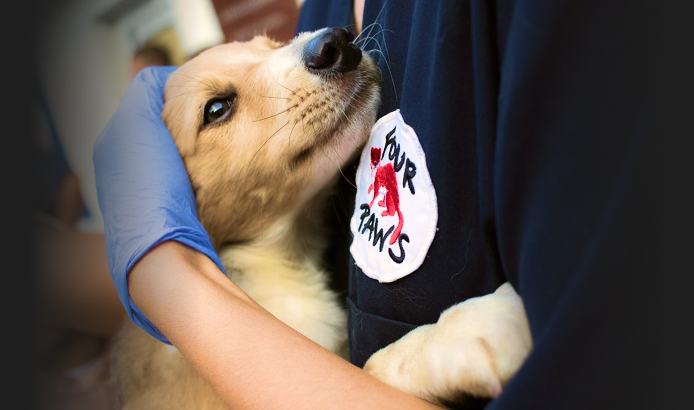

Support the Campaign
100% of all funds raised are used exclusively for hiring professionals to manage community communication and social activities. Full transparency. No personal compensation for core team.

100% of all funds raised are used exclusively for hiring professionals to manage community communication and social activities. Full transparency. No personal compensation for core team.

Direct Campaign Support. Contribute directly to the advocacy and legal fund to end dog meat consumption through institutional change.
Backer Tiers & Rewards. Support the structural growth of the organization while receiving exclusive updates and community recognition.
Get exclusive behind-the-scenes updates and your name listed in our official supporter registry.
Directly fund outreach sessions and receive prominent sponsor credit in our quarterly impact reports.
High-impact sponsorship opportunities are currently being finalized by our legal team.
We operate with institutional-grade financial oversight. Every dollar is tracked, audited, and deployed toward high-impact community engagement.
As our fundraising milestones are met, we unlock new features and tools for the community to scale our advocacy globally.
Direct democratic control over campaign priorities. This feature will unlock once the Community Fund reaches the $10,000 threshold.